XYZ-Konturdiagramm
XYZ-Contour
Zusammenfassung
Dieses Tutorial zeigt Ihnen, wie Sie eine Kontur aus XYZ-Daten erstellen und die X- und Y-Grenze hinzufügen.
- 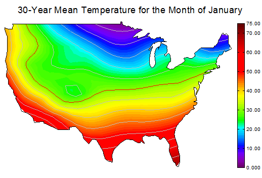
Origin-Version mind. erforderlich: 2020
 |
Vor Origin 2018 SR0 erzeugte die Anwendung einer benutzerdefinierten Grenze manchmal eine imperfekte Füllung an den Rändern der Grenze. Dies wurde in 2018 verbessert. Der Anwender kann das vorherige Verhalten beim Füllen der Kontur mit Hilfe der Systemvariable @TCSM wiederherstellen.

|
Was Sie lernen werden
Dieses Kapitel zeigt Ihnen, wie Sie:
- ein Konturdiagramm aus XYZ-Daten erstellen,
- Ebenen, Linien und Farbpaletten benutzerdefiniert anpassen,
- einen benutzerdefinierten Rahmen verwenden.
- die Farbskala benutzerdefiniert anpassen,
- die Achsen eines Diagramms benutzerdefiniert anpassen.
Schritte
Dieses Tutorial arbeitet mit dem mitgelieferten Diagrammbeispiel Contour Plots - XYZ Contour.
- Wählen Sie im Menü Hilfe: Lernzentrum, um den Dialog Lernzentrum zu öffnen. Wählen Sie die Registerkarte Diagrammbeispiel im linken Bedienfeld des Lernzentrums und geben Sie dann die Stichwörter "XYZ Contour" ein, um nach dem Beispiel zu suchen. Sie erhalten die folgende Liste mit Beispielen:
- 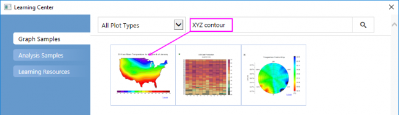
- Aktivieren Sie die Arbeitsmappe und markieren Sie die Spalte D. Wählen Sie dann Zeichnen > Kontur: Kontur - Farbfüllung, um ein farbiges Konturdiagramm zu erstellen.
- 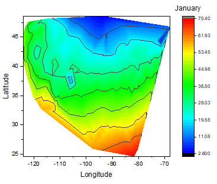
- Klicken Sie auf die Zeichnung und klicken Sie in der Popup-Minisymbolleiste auf die Schaltfläche Ebenen festlegen, um den Dialog Ebenen festlegen zu öffnen. Setzen Sie in diesem Dialog die Werte für Von und Bis auf 0 und 75 und die Hauptebenen und Nebenebenen auf die Werte 15 und 4. Klicken Sie auf OK, um den Dialog zu schließen.
- 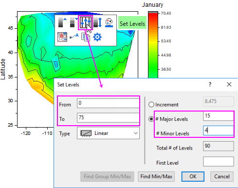
- Klicken Sie erneut auf die Zeichnung. Klicken Sie in der Minisymbolleiste auf die Schaltfläche Palette, um Rainbow in der Palettenliste auszuwählen.
- 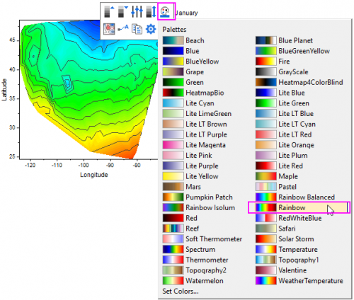
- Klicken Sie auf die X-Achse und klicken Sie in der Minisymbolleiste auf die Schaltfläche Achsenskalierung, um den Dialog Achsenskalierung zu öffnen. Setzen Sie in dem Dialog die Werte für Von und Bis auf -127 bzw. -65. Klicken Sie auf OK.
- 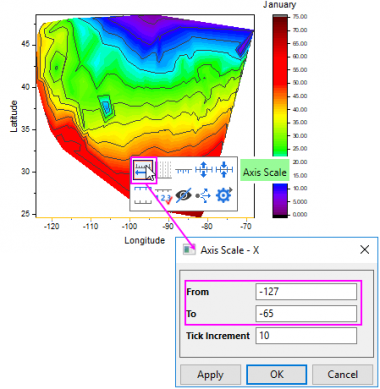
- Machen Sie dasselbe mit der Y-Achse und setzen Sie Von = 23 und Bis = 50.
- Klicken Sie auf den leeren Bereich innerhalb des Layerrahmens, um den Layer auszuwählen. Klicken Sie in der Minisymbolleiste erst auf die Schaltfläche Achsenanordnung und dann auf die Schaltfläche Kein unter der Popup-Liste, um alle Achsen für diese Zeichnung zu verbergen.
- 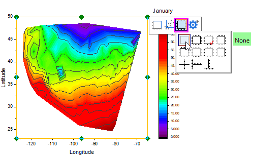
- Klicken Sie zum Aufrufen des Dialogs Details Zeichnung doppelt auf das Konturdiagramm. Gehen Sie zur Registerkarte Kontur Info, wählen Sie die Option Benutzerdefinierte Grenze und dann Col(E):"Boundary X" als Daten X für Grenze und Col(F):"Boundary X" als Daten Y für Grenze. Setzen Sie den Parameter zum Glätten auf 0,0490234.
- 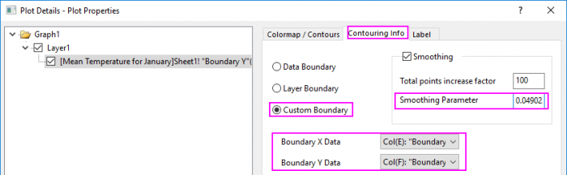
- Gehen Sie zur Registerkarte Farbpalette/Kontur und deaktivieren Sie das Kontrollkästchen Konturlinie folgen unter Rand, so dass die Randlinie einen eigenen Stil haben könnte. Klicken Sie auf die Überschrift Linien und stellen Sie sicher, dass Nur auf Hauptebenen zeigen aktiviert ist. Aktivieren Sie das Kontrollkästchen Farbe unter Auf alle anwenden und wählen Sie Hellgrau in der Auswahlliste als Konturlinienfarbe. Klicken Sie auf OK, um den Dialog zu schließen.
- 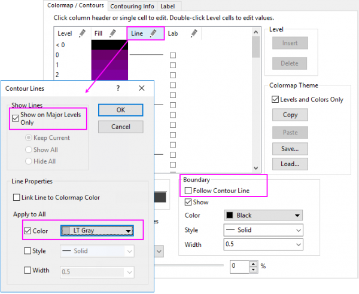
- Klicken Sie auf die Linie bei dem Wert 30, um sie separat benutzerdefiniert anzupassen, und klicken Sie auf OK, um den Dialog zu schließen.
- 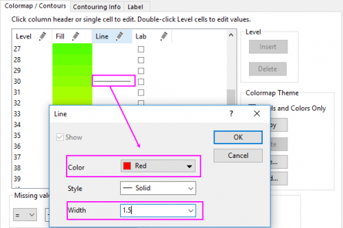
- Jetzt ändern wir die Layergröße/das Seitenverhältnis. Wählen Sie Layer1 im linken Bedienfeld, wechseln Sie zur Registerkarte Größe und ändern Sie die Werte im Layerbereich, wie unten zu sehen:
- 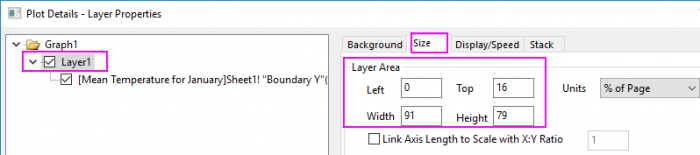
- Bestätigen Sie mit OK, um den Dialog Details Zeichnung zu schließen. Wählen Sie bei aktivem Diagrammfenster im Menü Grafik: Seite an Layer anpassen, um den Dialog Seite an Layer anpassen zu öffnen. Übernehmen Sie die Standarddialogeinstellungen und klicken Sie auf OK, um alle Elemente sichtbar zu machen.
- Jetzt passen Sie das Farbskalenobjekt benutzerdefiniert an. Klicken Sie doppelt auf die Farbskala, um den Dialog Eigenschaften Farbskala zu öffnen. Nehmen Sie dann die folgenden Einstellungen vor:
- 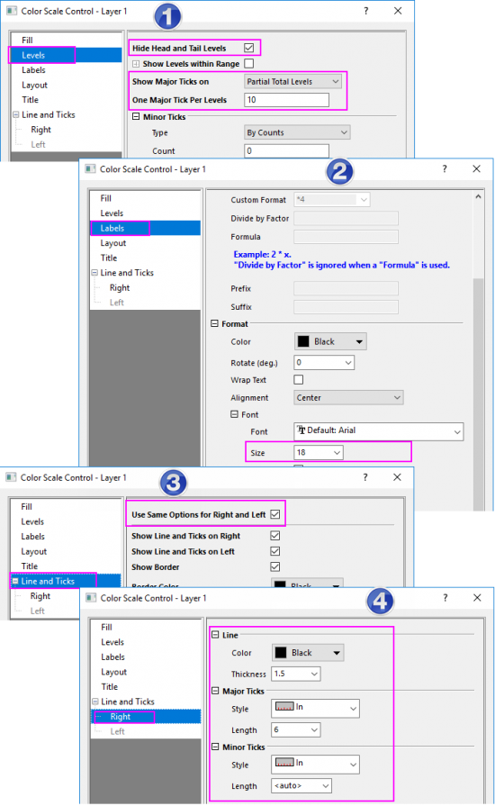
- Klicken Sie auf OK, um diese Einstellungen anzuwenden und den Dialog Eigenschaften Farbskala zu schließen.
- Klicken Sie mit der rechten Maustaste oberhalb des Konturdiagramms und wählen Sie Text hinzufügen, um einen Diagrammtitel 30-Year Mean Temperature for the Month of January hinzuzufügen. Verwenden Sie die Symbolleiste Format und/oder klicken Sie doppelt auf die fertige Textbeschriftung, um die Schriftart, die Schriftgröße etc. zu aktualisieren. Das Diagramm sollte folgendermaßen aussehen: